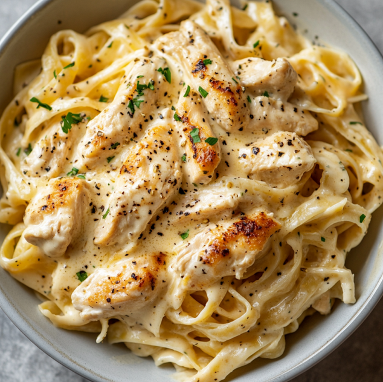

Chicken Alfredo Recipe

Ingredients
- 2 boneless, skinless chicken breasts
- Salt and black pepper, to taste
- 3 cloves garlic, minced (or 3/4 tsp
garlic powder
- 1 cup heavy cream
- 1 cup grated Parmesan cheese
- 1/2 cup unstalted butter
- 12 oz fettuccine pasta
- Fresh parsley, chopped (for garnish)
Instructions
- Season chicken breasts with salt and
pepper
- Heat olive oil in a large skilled over
medium-high heat. Cook the chicken until
golden brown and cooked through, about 6-7
minutes per side. Remove from skillet and
slice into strips.
- In the same skillet, add minced garlic
and cook until fragrant, about 1 minute
- Pour in the heavy cream and bring to
a simmer. Add the butter and stir until
melted.
- Gradually whisk in the Parmesan cheese
until the sauce is smooth and creamy.
Season with salt and pepper to taste.
- Meanwhile, cook the fettuccine according
to the package instructions. Drain and add
the sauce.
- Add the sliced chicken to the pasta and toss
to combine.
- Garnish with fresh parsely and serve.
Notes
See the original recipe
Here